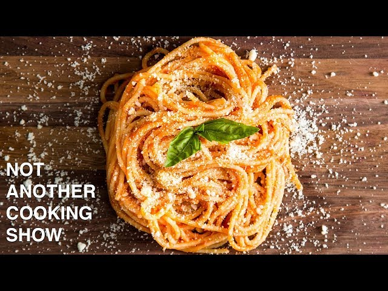

Weekday Sauce

About the Dish
I am unsure of the specific origins of this dish. Alongside the other two recipes I have written about, this one comes from NOT ANOTHER COOKING SHOWas well. Its simplicity is between the Aglio e Olio and Pasta Amatriciana. The list of ingredients is short and the ingredients themselves can be found in your house (aside from specifically San Marzano tomatoes).
This is my personal favourite from my recipes website. I cannot begin to count how many times I have eaten this dish. I've cooked it for myself, dates, friends, and family. I've modified the recipe to suit my tastes and to add different flavours and textures. It's essentially a universal sauce that can be the basis of your own personal recipe. I love this dish very dearly. The stirring technique can be quite difficult at first for beginner cooks but is very easily picked up.
Let's go cook my favourite pasta dish of all time!
List of Ingredients
- 800g of Whole Peeled Plum San Marzano Tomatoes
- 4 medium cloves of Garlic (very thinly sliced)
- A handful of Basil (with stems)
- 60ml of Olive Oil
- 1/2 cup of Parmesan Cheese
- Salt
Steps
- Puree the tomatoes until very smooth
- Slice the garlic cloves very thin.
- Gently wash basil under the tap and dry between paper towels
- Grate the parmesan cheese
- Set a large pot of water to boil
- Add enough oil to coat the bottom of a large skillet pan (roughly 60ml) and set on low heat.
- While the oil is still cold in the pan, throw in the garlic and basil.
- Slowly let the oil, garlic, and basil come up to temperature.
- (Not necessary) Remove basil once it has wilted and turned brown.
- Add the pureed tomatoes and set the stove to medium/high.
- Once the tomatoes are in the pan, continuously stir the ingredients around while moving the pan in a circular motion (opposite direction to the stirring)
- After stirring for a few minutes and the sauce starts to come together, add a generous pinch of salt and continue stirring in the same fashion.
- Right after adding the salt, put the pasta in the pot and cook to within 2-3 minutes of package instructions
- Don't worry about any bubbles in the sauce, just keep stirring and watch the sauce come together before your eyes. Be careful not to burn the sauce, lower heat if it's boiling a lot while stirring.
- Once the sauce has come together, add the parmesan cheese and stir to combine. Lower the heat to bring the sauce to a slow simmer.
- After the pasta is within 2-3 minutes of being done, add it to the sauce and mix well.
- Serve with more parmesan and fresh basil on top.